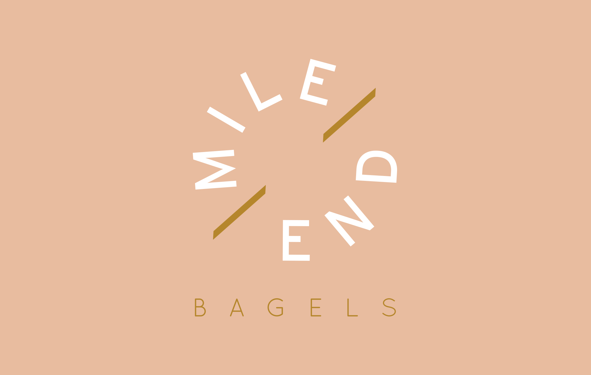

The pair behind Mile End were motivated to bring wood fired Montreal-style Bagels to Melbourne. The concept required a well thought-out brand to reflect their stripped back aesthetic and high quality product. Finding their home in Johnston Street, Fitzroy, the premises uses the logo sparingly and pairs it with illusrated elements and raw materials.
Playing on the concept of the 'everything bagel'
the first supporting illustration for Mile End was created.
To add personality to the brand, other illustrated assets were developed using a bagel character that lives a rock star Fitzroy lifestyle.